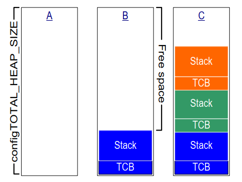
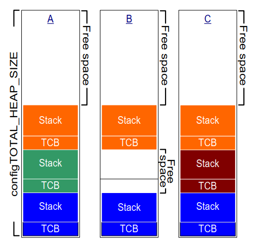

3 堆内存管理
3.1 简介
3.1.1 前提条件
成为一名熟练的 C 程序员是使用 FreeRTOS 的前提条件，因此本章假设读者熟悉以下概念：
- 构建 C 项目的不同编译和链接阶段。
- 堆栈和堆的概念。
- 标准 C 库的
malloc()和free()函数。
3.1.2 范围
本章涵盖：
- FreeRTOS 何时分配 RAM。
- FreeRTOS 提供的五种示例内存分配方案。
- 如何选择内存分配方案。
3.1.3 在静态和动态内存分配之间切换
以下章节将介绍内核对象，例如任务、队列、信号量和事件组。用于保存这些对象的 RAM 可以在编译时静态分配，也可以在运行时动态分配。动态分配减少了设计和规划工作量，简化了 API，并最小化了 RAM 占用。静态分配更具确定性，消除了处理内存分配失败的需要，并消除了堆碎片的风险（即堆中有足够的空闲内存但不是一个可用的连续块）。
提供静态分配内存的内核对象创建 FreeRTOS API 函数仅在 FreeRTOSConfig.h 中将 configSUPPORT_STATIC_ALLOCATION 设置为 1 时可用。使用动态分配内存创建内核对象的 FreeRTOS API 函数仅在 FreeRTOSConfig.h 中将 configSUPPORT_DYNAMIC_ALLOCATION 设置为 1 或保持未定义时可用。将两个常量同时设置为 1 是有效的。
有关 configSUPPORT_STATIC_ALLOCATION 的更多信息，请参见 3.4 节《使用静态内存分配》。
3.1.4 使用动态内存分配
动态内存分配是 C 程序设计的一种概念，而不是 FreeRTOS 或多任务处理特有的概念。它与 FreeRTOS 相关，因为内核对象可以选择使用动态分配的内存创建，并且通用 C 库 malloc() 和 free() 函数可能不适合以下一个或多个原因：
- 它们并不总是在小型嵌入式系统上可用。
- 它们的实现相对较大，占用宝贵的代码空间。
- 它们很少是线程安全的。
- 它们不是确定性的；执行函数所需的时间因调用而异。
- 它们可能会出现碎片化（即堆中有足够的空闲内存但不是一个可用的连续块）。
- 它们可能会使链接器配置变得复杂。
- 如果堆空间被允许增长到其他变量使用的内存中，它们可能是难以调试错误的源头。
3.1.5 动态内存分配的选项
早期版本的 FreeRTOS 使用内存池分配方案，其中在编译时预分配不同大小内存块的池，然后由内存分配函数返回。尽管块分配在实时系统中很常见，但由于其在非常小的嵌入式系统中对 RAM 的低效使用而导致许多支持请求，因此它已从 FreeRTOS 中删除。
FreeRTOS 现在将内存分配视为可移植层的一部分（而不是核心代码库的一部分）。这是因为不同的嵌入式系统具有不同的动态内存分配和时间要求，因此单一的动态内存分配算法仅适用于一部分应用程序。此外，从核心代码库中删除动态内存分配使应用程序编写者能够在适当时提供自己特定的实现。
当 FreeRTOS 需要 RAM 时，它会调用 pvPortMalloc() 而不是 malloc()。同样，当 FreeRTOS 释放先前分配的 RAM 时，它会调用 vPortFree() 而不是 free()。pvPortMalloc() 的原型与标准 C 库 malloc() 函数相同，vPortFree() 的原型与标准 C 库 free() 函数相同。
pvPortMalloc() 和 vPortFree() 是公共函数，因此它们也可以从应用程序代码中调用。
FreeRTOS 附带了五个 pvPortMalloc() 和 vPortFree() 的示例实现，它们都在本章中有文档说明。FreeRTOS 应用程序可以使用其中一个示例实现或提供自己的实现。
这五个示例分别在 heap_1.c、heap_2.c、heap_3.c、heap_4.c 和 heap_5.c 源文件中定义，所有这些文件都位于 FreeRTOS/Source/portable/MemMang 目录中。
3.2 示例内存分配方案
3.2.1 Heap_1
对于仅在启动 FreeRTOS 调度程序之前创建任务和其他内核对象的小型专用嵌入式系统来说，情况是很常见的。当出现这种情况时，内核仅在应用程序开始执行任何实时功能之前动态分配内存，并且内存在应用程序的整个生命周期内保持分配状态。这意味着所选择的分配方案不必考虑更复杂的内存分配问题，例如确定性和碎片化，而可以优先考虑代码大小和简单性等属性。
Heap_1.c 实现了 pvPortMalloc() 的一个非常基本的版本，并且不实现 vPortFree()。从不删除任务或其他内核对象的应用程序有可能使用 heap_1。某些商业关键和安全关键系统如果不使用动态内存分配也有可能使用 heap_1。关键系统通常禁止动态内存分配，因为它带来的不确定性、内存碎片和分配失败的风险。Heap_1 始终是确定性的，并且不会导致内存碎片。
Heap_1 对 pvPortMalloc() 的实现只是每次调用时将一个简单的 uint8_t 数组（称为 FreeRTOS 堆）细分为较小的块。FreeRTOSConfig.h 常量 configTOTAL_HEAP_SIZE 设置数组的大小（以字节为单位）。将堆实现为静态分配的数组使 FreeRTOS 看起来消耗了大量 RAM，因为堆成为 FreeRTOS 数据的一部分。
每个动态分配的任务都会导致对 pvPortMalloc() 的两次调用。第一次分配任务控制块（TCB），第二次分配任务的堆栈。图 3.1 演示了当创建任务时 heap_1 如何细分简单数组。
参见图 3.1：
-
A 显示了在创建任何任务之前的数组——整个数组都是空闲的。
-
B 显示了创建一个任务后的数组。
-
C 显示了创建三个任务后的数组。

图 3.1 从 heap_1 数组中分配 RAM 的过程3.2.2 Heap_2
Heap_2 已被 heap_4 取代，后者具有增强的功能。 Heap_2 保留在 FreeRTOS 发行版中是为了向后兼容，不建议用于新设计。
Heap_2.c 通过细分由 configTOTAL_HEAP_SIZE 常量定义的数组来工作。它使用最佳适应算法来分配内存，并且与 heap_1 不同，它实现了 vPortFree()。同样，将堆实现为静态分配的数组使 FreeRTOS 看起来消耗了大量 RAM，因为堆成为 FreeRTOS 数据的一部分。
最佳适应算法确保 pvPortMalloc() 使用与请求的字节数最接近的空闲内存块。例如，考虑以下场景：
- 堆中包含三个空闲内存块，分别为 5 字节、25 字节和 100 字节。
pvPortMalloc()请求 20 字节的 RAM。
适合请求的字节数的最小空闲 RAM 块是 25 字节块，因此 pvPortMalloc() 将 25 字节块细分为一个 20 字节块和一个 5 字节块，然后返回指向 20 字节块的指针[^2]。新的 5 字节块仍然可以用于将来的 pvPortMalloc() 调用。
[^2]: 这是一种过于简化的说法，因为 heap_2 在堆区域内存储块大小的信息，因此这两个拆分块的总和实际上将小于 25。
与 heap_4 不同，heap_2 不会将相邻的空闲块合并为一个较大的块，因此它比 heap_4 更容易出现碎片化。然而，如果分配和随后释放的块始终是相同大小的，则碎片化就不是问题。

图 3.2 RAM 的分配和释放过程图 3.2 演示了当任务被创建、删除和重新创建时，最佳适应算法是如何工作的。参见图 3.2：
-
A 显示了分配三个任务后的数组。数组顶部仍然有一个大空闲块。
-
B 显示了删除一个任务后的数组。数组顶部的大空闲块保持不变。现在还有两个较小的空闲块，分别是之前用于被删除任务的 TCB 和堆栈。
-
C 显示了创建另一个任务后的情况。创建任务导致在
xTaskCreate()API 函数内部从pvPortMalloc()发出两个调用，一个用于分配新的 TCB，另一个用于分配任务堆栈。第 3.4 节描述了xTaskCreate()。
每个 TCB 的大小是相同的，因此最佳适应算法将重新使用之前被删除任务的 TCB 所在的 RAM 块，以容纳新创建任务的 TCB。
如果分配给新创建任务的堆栈的大小与之前删除任务的堆栈相同，则最佳适应算法将重新使用之前被删除任务的堆栈所在的 RAM 块，以容纳新创建任务的堆栈。
顶部较大的未分配块保持不变。
Heap_2 不是确定性的，但比大多数标准库实现的 malloc() 和 free() 快。
3.2.3 Heap_3
Heap_3.c 使用标准库的 malloc() 和 free() 函数，因此链接器配置定义了堆的大小，并且不使用 configTOTAL_HEAP_SIZE 常量。
Heap_3 通过在执行期间暂时挂起 FreeRTOS 调度程序来使 malloc() 和 free() 线程安全。第 8 章《资源管理》涵盖了线程安全和调度程序挂起。
3.2.4 Heap_4
与 heap_1 和 heap_2 一样，heap_4 通过将数组细分为较小的块来工作。与之前一样，数组是静态分配的，并由 configTOTAL_HEAP_SIZE 定义，这使得 FreeRTOS 看起来消耗了大量 RAM，因为堆成为 FreeRTOS 数据的一部分。
Heap_4 使用首次适应算法来分配内存。与 heap_2 不同，heap_4 将相邻的自由内存块合并（合并）为一个较大的块，从而最小化内存碎片的风险。
首次适应算法确保 pvPortMalloc() 使用第一个足够大的空闲内存块来容纳请求的字节数。例如，考虑以下场景：
- 堆中包含三个空闲内存块，按它们在数组中出现的顺序分别为 5 字节、200 字节和 100 字节。
pvPortMalloc()请求 20 字节的 RAM。
请求的字节数适合的第一个空闲 RAM 块是 200 字节块，因此 pvPortMalloc() 将 200 字节块细分为一个 20 字节块和一个 180 字节块[^3]，然后返回指向 20 字节块的指针。新的 180 字节块仍然可以用于将来的 pvPortMalloc() 调用。
[^3]: 这是一种过于简化的说法，因为 heap_4 在堆区域内存储块大小的信息，因此这两个拆分块的总和实际上将小于 200 字节。
Heap_4 将相邻的空闲块合并为一个较大的块，最小化碎片化的风险，使其适用于反复分配和释放不同大小的 RAM 块的应用程序。
 图 3.3 RAM 的分配和释放过程
图 3.3 RAM 的分配和释放过程
图 3.3 演示了带有内存合并的 heap_4 首次适应算法是如何工作的。参见图 3.3：
-
A 显示了创建三个任务后的数组。数组顶部仍然有一个大空闲块。
-
B 显示了删除一个任务后的数组。数组顶部的大空闲块保持不变。现在还有一个空闲块，原来用于被删除任务的 TCB 和堆栈。与 heap_2 示例不同，heap_4 将之前分别用于被删除任务的 TCB 和堆栈的两个内存块合并为一个较大的空闲块。
-
C 显示了在创建 FreeRTOS 队列之后的情况。本书第 5.3 节描述了用于动态分配队列的
xQueueCreate()API 函数。xQueueCreate()调用pvPortMalloc()来分配队列使用的 RAM。如图 3.3 所示，heap_4 使用首次适应算法，pvPortMalloc()从第一个足够大的空闲 RAM 块中分配 RAM，该块正是通过删除任务而释放的 RAM。队列并没有消耗掉自由块中的所有 RAM，因此该块被细分为两个，未使用的部分仍然可以用于将来的pvPortMalloc()调用。 -
D 显示了从应用程序代码直接调用
pvPortMalloc()之后的情况，而不是通过调用 FreeRTOS API 函数。用户分配的内存块足够小，可以适应第一个空闲块，即在队列分配的内存与后续分配的 TCB 之间的块。
被删除任务释放的内存现在分成了三个独立的块；第一个块用于队列，第二个块用于用户分配的内存，第三个块保持空闲。
-
E 显示了删除队列之后的情况，删除队列会自动释放分配给已删除队列的内存。用户分配的内存两侧现在都有空闲内存。
-
F 显示了解释用户分配的内存之后的情况。之前用于用户分配块的内存已与两侧的空闲内存合并，形成一个较大的单一空闲块。
Heap_4 不是确定性的，但比大多数标准库实现的 malloc() 和 free() 快。
3.2.5 Heap_5
Heap_5 使用与 heap_4 相同的分配算法。与 heap_4 不同，heap_5 可以从多个分离的内存空间中组合内存，形成一个单一的堆。Heap_5 在 FreeRTOS 运行的系统的内存映射中，RAM 并不总是作为一个连续的（没有空隙）块出现时非常有用。
3.2.6 初始化 heap_5：vPortDefineHeapRegions() API 函数
vPortDefineHeapRegions() 通过指定构成堆的每个单独内存区域的起始地址和大小来初始化 heap_5。Heap_5 是唯一需要显式初始化的堆分配方案，在调用 vPortDefineHeapRegions() 之前无法使用。这意味着内核对象（例如任务、队列和信号量）无法在调用 vPortDefineHeapRegions() 之前动态创建。
void vPortDefineHeapRegions( const HeapRegion_t * const pxHeapRegions );
清单 3.1 vPortDefineHeapRegions() API 函数原型
vPortDefineHeapRegions() 仅接受一个参数，即 HeapRegion_t 结构的数组。每个结构定义了将成为堆的一部分的内存块的起始地址和大小——整个结构数组定义了整个堆空间。
typedef struct HeapRegion
{
/* The start address of a block of memory that will be part of the heap.*/
uint8_t *pucStartAddress;
/* The size of the block of memory in bytes. */
size_t xSizeInBytes;
} HeapRegion_t;
清单 3.2 HeapRegion_t 结构体
参数：
pxHeapRegions
指向 HeapRegion_t 结构数组开头的指针。每个结构定义了将成为堆的一部分的内存块的起始地址和大小。
数组中的 HeapRegion_t 结构必须按起始地址排序；描述具有最低起始地址的内存区域的 HeapRegion_t 结构必须是数组中的第一个结构，描述具有最高起始地址的内存区域的 HeapRegion_t 结构必须是数组中的最后一个结构。
用 pucStartAddress 成员设置为 NULL 的 HeapRegion_t 结构标记数组的结束。
通过示例，考虑图 3.4 A 中的假设内存映射，其中包含三个单独的 RAM 块：RAM1、RAM2 和 RAM3。假设可执行代码被放置在只读存储器中，而只读存储器未在图中显示。
 图 3.4 内存映射
图 3.4 内存映射
清单 3.3 显示了一个 HeapRegion_t 结构的数组，该数组完整地描述了三个 RAM 块。
/* Define the start address and size of the three RAM regions. */
#define RAM1_START_ADDRESS ( ( uint8_t * ) 0x00010000 )
#define RAM1_SIZE ( 64 * 1024 )
#define RAM2_START_ADDRESS ( ( uint8_t * ) 0x00020000 )
#define RAM2_SIZE ( 32 * 1024 )
#define RAM3_START_ADDRESS ( ( uint8_t * ) 0x00030000 )
#define RAM3_SIZE ( 32 * 1024 )
/* Create an array of HeapRegion_t definitions, with an index for each
of the three RAM regions, and terminate the array with a HeapRegion_t
structure containing a NULL address. The HeapRegion_t structures must
appear in start address order, with the structure that contains the
lowest start address appearing first. */
const HeapRegion_t xHeapRegions[] =
{
{ RAM1_START_ADDRESS, RAM1_SIZE },
{ RAM2_START_ADDRESS, RAM2_SIZE },
{ RAM3_START_ADDRESS, RAM3_SIZE },
{ NULL, 0 } /* Marks the end of the array. */
};
int main( void )
{
/* Initialize heap_5. */
vPortDefineHeapRegions( xHeapRegions );
/* Add application code here. */
}
清单 3.3 描述三个 RAM 区域的 HeapRegion_t 结构的数组
尽管清单 3.3 正确地描述了 RAM，但由于它将所有 RAM 都分配给堆，因此它并没有演示一个可用的示例，其他变量将没有 RAM 可用。
构建过程的链接阶段为每个变量分配了一个 RAM 地址。可供链接器使用的 RAM 通常由链接器配置文件（例如链接器脚本）描述。在图 3.4 B 中，假设链接器脚本包含有关 RAM1 的信息，但不包含有关 RAM2 或 RAM3 的信息。因此，链接器将变量放置在 RAM1 中，仅在地址 0x0001nnnn 以上留下可供 heap_5 使用的 RAM。0x0001nnnn 的实际值取决于包含在应用程序中的所有变量的总大小。链接器已将 RAM2 和 RAM3 的所有内容留空，因此 heap_5 可以使用 RAM2 和 RAM3 的整个内容。
清单 3.3 中显示的代码会导致分配给 heap_5 的 RAM 与链接器使用的 RAM 重叠，尤其是低于地址 0x0001nnnn 的地址。如果将 xHeapRegions[] 数组中第一个 HeapRegion_t 结构的起始地址设置为 0x0001nnnn，而不是 0x00010000，则堆将不会与链接器使用的 RAM 重叠。然而，这不是一个推荐的解决方案，因为：
- 起始地址可能不容易确定。
- 将来构建中链接器使用的 RAM 大小可能会发生变化，这将需要更新
HeapRegion_t结构中使用的起始地址。 - 如果链接器使用的 RAM 和 heap_5 使用的 RAM 重叠，构建工具将无法知道，因此无法警告应用程序编写者。
清单 3.4 演示了一种更方便和可维护的示例。它声明了一个名为 ucHeap 的数组。ucHeap 是一个普通变量，因此它成为分配给 RAM1 的数据的一部分。xHeapRegions 数组中的第一个 HeapRegion_t 结构描述了 ucHeap 的起始地址和大小，因此 ucHeap 成为 heap_5 管理的内存的一部分。可以增加 ucHeap 的大小，直到链接器占用 RAM1 的所有 RAM，如图 3.4 C 所示。
/* Define the start address and size of the two RAM regions not used by
the linker. */
#define RAM2_START_ADDRESS ( ( uint8_t * ) 0x00020000 )
#define RAM2_SIZE ( 32 * 1024 )
#define RAM3_START_ADDRESS ( ( uint8_t * ) 0x00030000 )
#define RAM3_SIZE ( 32 * 1024 )
/* Declare an array that will be part of the heap used by heap_5. The
array will be placed in RAM1 by the linker. */
#define RAM1_HEAP_SIZE ( 30 * 1024 )
static uint8_t ucHeap[ RAM1_HEAP_SIZE ];
/* Create an array of HeapRegion_t definitions. Whereas in Listing 3.3 the
first entry described all of RAM1, so heap_5 will have used all of
RAM1, this time the first entry only describes the ucHeap array, so
heap_5 will only use the part of RAM1 that contains the ucHeap array.
The HeapRegion_t structures must still appear in start address order,
with the structure that contains the lowest start address appearing first. */
const HeapRegion_t xHeapRegions[] =
{
{ ucHeap, RAM1_HEAP_SIZE },
{ RAM2_START_ADDRESS, RAM2_SIZE },
{ RAM3_START_ADDRESS, RAM3_SIZE },
{ NULL, 0 } /* Marks the end of the array. */
};
清单 3.4 描述 RAM2、RAM3 以及 RAM1 部分的 HeapRegion_t 结构的数组
清单 3.4 中演示的技术的优点包括：
- 不必使用硬编码的起始地址。
HeapRegion_t结构中使用的地址将由链接器自动设置，因此即使将来构建中链接器使用的 RAM 大小发生变化，它也始终是正确的。- heap_5 分配的 RAM 不会与链接器放置到 RAM1 中的数据重叠。
- 如果
ucHeap太大，应用程序将无法链接。
3.3 堆相关的实用程序函数和宏
3.3.1 定义堆起始地址
Heap_1、heap_2 和 heap_4 从由 configTOTAL_HEAP_SIZE 定义的静态分配数组中分配内存。本节将这些分配方案统称为 heap_n。
有时需要将堆放置在特定的内存地址。例如，分配给动态创建的任务的堆栈来自堆，因此可能需要将堆放在快速内部内存中，而不是慢速外部内存中。（请参见下面的子章节《将任务堆栈放置在快速内存中》，了解分配在快速内存中任务堆栈的另一种方法。）configAPPLICATION_ALLOCATED_HEAP 编译时配置常量使应用程序能够声明该数组，以取代原本在 heap_n.c 源文件中的声明。在应用程序代码中声明该数组使应用程序编写者能够指定其起始地址。
如果在 FreeRTOSConfig.h 中将 configAPPLICATION_ALLOCATED_HEAP 设置为 1，则使用 FreeRTOS 的应用程序必须分配一个名为 ucHeap 的 uint8_t 数组，并由 configTOTAL_HEAP_SIZE 常量定义其大小。
将变量放置在特定内存地址的语法取决于所使用的编译器，因此请参考您的编译器文档。以下是两个编译器的示例：
- 清单 3.5 显示了 GCC 编译器所需的语法，以声明数组并将其放置在名为
.my_heap的内存区段中。 - 清单 3.6 显示了 IAR 编译器所需的语法，以声明数组并将其放置在绝对内存地址 0x20000000 中。
uint8_t ucHeap[ configTOTAL_HEAP_SIZE ] __attribute__ ( ( section( ".my_heap" ) ) );
清单 3.5 使用 GCC 语法声明将被 heap_4 使用的数组，并将该数组放置在名为 .my_heap 的内存区段中
uint8_t ucHeap[ configTOTAL_HEAP_SIZE ] @ 0x20000000;
清单 3.6 使用 IAR 语法声明将被 heap_4 使用的数组，并将该数组放置在绝对地址 0x20000000 中
3.3.2 xPortGetFreeHeapSize() API 函数
xPortGetFreeHeapSize() API 函数返回调用时堆中空闲字节的数量。它不提供有关堆碎片的信息。
heap_3 中未实现 xPortGetFreeHeapSize()。
size_t xPortGetFreeHeapSize( void );
清单 3.7 xPortGetFreeHeapSize() API 函数原型
返回值：
xPortGetFreeHeapSize()返回调用时堆中未分配字节的数量。
3.3.3 xPortGetMinimumEverFreeHeapSize() API 函数
xPortGetMinimumEverFreeHeapSize() API 函数返回自 FreeRTOS 应用程序开始执行以来，堆中曾经存在的最小未分配字节数。
xPortGetMinimumEverFreeHeapSize() 返回的值指示应用程序在多大程度上接近于耗尽堆空间。例如，如果 xPortGetMinimumEverFreeHeapSize() 返回 200，则在应用程序开始执行以来的某个时刻，它距离耗尽堆空间仅剩 200 字节。
xPortGetMinimumEverFreeHeapSize() 也可用于优化堆大小。例如，如果在您知道的具有最高堆使用率的代码执行后，xPortGetMinimumEverFreeHeapSize() 返回 2000，则可以将 configTOTAL_HEAP_SIZE 减小最多 2000 字节。
xPortGetMinimumEverFreeHeapSize() 仅在 heap_4 和 heap_5 中实现。
size_t xPortGetMinimumEverFreeHeapSize( void );
清单 3.8 xPortGetMinimumEverFreeHeapSize() API 函数原型
返回值：
xPortGetMinimumEverFreeHeapSize()返回自 FreeRTOS 应用程序开始执行以来，堆中曾经存在的最小未分配字节数。
3.3.4 vPortGetHeapStats() API 函数
Heap_4 和 heap_5 实现了 vPortGetHeapStats()，该函数通过引用将 HeapStats_t 结构作为唯一参数传递。
清单 3.9 显示了 vPortGetHeapStats() 函数原型。清单 3.10 显示了 HeapStats_t 结构成员。
void vPortGetHeapStats( HeapStats_t *xHeapStats );
清单 3.9 vPortGetHeapStatus() API 函数原型
/* Prototype of the vPortGetHeapStats() function. */
void vPortGetHeapStats( HeapStats_t *xHeapStats );
/* Definition of the HeapStats_t structure. All sizes specified in bytes. */
typedef struct xHeapStats
{
/* The total heap size currently available - this is the sum of all the
free blocks, not the largest available block. */
size_t xAvailableHeapSpaceInBytes;
/* The size of the largest free block within the heap at the time
vPortGetHeapStats() is called. */
size_t xSizeOfLargestFreeBlockInBytes;
/* The size of the smallest free block within the heap at the time
vPortGetHeapStats() is called. */
size_t xSizeOfSmallestFreeBlockInBytes;
/* The number of free memory blocks within the heap at the time
vPortGetHeapStats() is called. */
size_t xNumberOfFreeBlocks;
/* The minimum amount of total free memory (sum of all free blocks)
there has been in the heap since the system booted. */
size_t xMinimumEverFreeBytesRemaining;
/* The number of calls to pvPortMalloc() that have returned a valid
memory block. */
size_t xNumberOfSuccessfulAllocations;
/* The number of calls to vPortFree() that has successfully freed a
block of memory. */
size_t xNumberOfSuccessfulFrees;
} HeapStats_t;
清单 3.10 HeapStatus_t() 结构体
3.3.5 收集每个任务的堆使用统计信息
应用程序编写者可以使用以下跟踪宏收集每个任务的堆使用统计信息：
- traceMALLOC
- traceFREE
清单 3.11 显示了这些跟踪宏的一个示例实现，用于收集每个任务的堆使用统计信息。
#define mainNUM_ALLOCATION_ENTRIES 512
#define mainNUM_PER_TASK_ALLOCATION_ENTRIES 32
/*-----------------------------------------------------------*/
/*
* +-----------------+--------------+----------------+-------------------+
* | Allocating Task | Entry in use | Allocated Size | Allocated Pointer |
* +-----------------+--------------+----------------+-------------------+
* | | | | |
* +-----------------+--------------+----------------+-------------------+
* | | | | |
* +-----------------+--------------+----------------+-------------------+
*/
typedef struct AllocationEntry
{
BaseType_t xInUse;
TaskHandle_t xAllocatingTaskHandle;
size_t uxAllocatedSize;
void * pvAllocatedPointer;
} AllocationEntry_t;
AllocationEntry_t xAllocationEntries[ mainNUM_ALLOCATION_ENTRIES ];
/*
* +------+-----------------------+----------------------+
* | Task | Memory Currently Held | Max Memory Ever Held |
* +------+-----------------------+----------------------+
* | | | |
* +------+-----------------------+----------------------+
* | | | |
* +------+-----------------------+----------------------+
*/
typedef struct PerTaskAllocationEntry
{
TaskHandle_t xTask;
size_t uxMemoryCurrentlyHeld;
size_t uxMaxMemoryEverHeld;
} PerTaskAllocationEntry_t;
PerTaskAllocationEntry_t xPerTaskAllocationEntries[ mainNUM_PER_TASK_ALLOCATION_ENTRIES ];
/*-----------------------------------------------------------*/
void TracepvPortMalloc( size_t uxAllocatedSize, void * pv )
{
size_t i;
TaskHandle_t xAllocatingTaskHandle;
AllocationEntry_t * pxAllocationEntry = NULL;
PerTaskAllocationEntry_t * pxPerTaskAllocationEntry = NULL;
if( xTaskGetSchedulerState() != taskSCHEDULER_NOT_STARTED )
{
xAllocatingTaskHandle = xTaskGetCurrentTaskHandle();
for( i = 0; i < mainNUM_ALLOCATION_ENTRIES; i++ )
{
if( xAllocationEntries[ i ].xInUse == pdFALSE )
{
pxAllocationEntry = &( xAllocationEntries[ i ] );
break;
}
}
/* Do we already have an entry in the per task table? */
for( i = 0; i < mainNUM_PER_TASK_ALLOCATION_ENTRIES; i++ )
{
if( xPerTaskAllocationEntries[ i ].xTask == xAllocatingTaskHandle )
{
pxPerTaskAllocationEntry = &( xPerTaskAllocationEntries[ i ] );
break;
}
}
/* We do not have an entry in the per task table. Find an empty slot. */
if( pxPerTaskAllocationEntry == NULL )
{
for( i = 0; i < mainNUM_PER_TASK_ALLOCATION_ENTRIES; i++ )
{
if( xPerTaskAllocationEntries[ i ].xTask == NULL )
{
pxPerTaskAllocationEntry = &( xPerTaskAllocationEntries[ i ] );
break;
}
}
}
/* Ensure that we have space in both the tables. */
configASSERT( pxAllocationEntry != NULL );
configASSERT( pxPerTaskAllocationEntry != NULL );
pxAllocationEntry->xAllocatingTaskHandle = xAllocatingTaskHandle;
pxAllocationEntry->xInUse = pdTRUE;
pxAllocationEntry->uxAllocatedSize = uxAllocatedSize;
pxAllocationEntry->pvAllocatedPointer = pv;
pxPerTaskAllocationEntry->xTask = xAllocatingTaskHandle;
pxPerTaskAllocationEntry->uxMemoryCurrentlyHeld += uxAllocatedSize;
if( pxPerTaskAllocationEntry->uxMaxMemoryEverHeld < pxPerTaskAllocationEntry->uxMemoryCurrentlyHeld )
{
pxPerTaskAllocationEntry->uxMaxMemoryEverHeld = pxPerTaskAllocationEntry->uxMemoryCurrentlyHeld;
}
}
}
/*-----------------------------------------------------------*/
void TracevPortFree( void * pv )
{
size_t i;
AllocationEntry_t * pxAllocationEntry = NULL;
PerTaskAllocationEntry_t * pxPerTaskAllocationEntry = NULL;
for( i = 0; i < mainNUM_ALLOCATION_ENTRIES; i++ )
{
if( ( xAllocationEntries[ i ].xInUse == pdTRUE ) &&
( xAllocationEntries[ i ].pvAllocatedPointer == pv ) )
{
pxAllocationEntry = &( xAllocationEntries [ i ] );
break;
}
}
/* Attempt to free a block that was never allocated. */
configASSERT( pxAllocationEntry != NULL );
for( i = 0; i < mainNUM_PER_TASK_ALLOCATION_ENTRIES; i++ )
{
if( xPerTaskAllocationEntries[ i ].xTask == pxAllocationEntry->xAllocatingTaskHandle )
{
pxPerTaskAllocationEntry = &( xPerTaskAllocationEntries[ i ] );
break;
}
}
/* An entry must exist in the per task table. */
configASSERT( pxPerTaskAllocationEntry != NULL );
pxPerTaskAllocationEntry->uxMemoryCurrentlyHeld -= pxAllocationEntry->uxAllocatedSize;
pxAllocationEntry->xInUse = pdFALSE;
pxAllocationEntry->xAllocatingTaskHandle = NULL;
pxAllocationEntry->uxAllocatedSize = 0;
pxAllocationEntry->pvAllocatedPointer = NULL;
}
/*-----------------------------------------------------------*/
/* The following goes in FreeRTOSConfig.h: */
extern void TracepvPortMalloc( size_t uxAllocatedSize, void * pv );
extern void TracevPortFree( void * pv );
#define traceMALLOC( pvReturn, xAllocatedBlockSize ) \
TracepvPortMalloc( xAllocatedBlockSize, pvReturn )
#define traceFREE( pv, xAllocatedBlockSize ) \
TracevPortFree( pv )
清单 3.11 收集每个任务的堆使用统计信息
3.3.6 内存分配失败钩子函数
像标准库的 malloc() 函数一样，如果 pvPortMalloc() 无法分配请求的 RAM，则返回 NULL。如果 malloc失败钩子（或回调）是一个应用程序提供的函数，如果 pvPortMalloc() 返回 NULL，则调用该函数。必须在 FreeRTOSConfig.h 中将 configUSE_MALLOC_FAILED_HOOK 设置为 1，以便发生回调。如果 malloc 失败钩子在使用动态内存分配创建内核对象的 FreeRTOS API 函数内部被调用，则该对象将无法被创建。
如果在 FreeRTOSConfig.h 中将 configUSE_MALLOC_FAILED_HOOK 设置为 1，则应用程序必须提供一个 malloc失败钩子函数，其名称和原型如清单 3.12 所示。应用程序可以以适合其应用程序的任何方式实现该函数。许多提供的 FreeRTOS 演示应用程序将分配失败视为致命错误，但这对于生产系统来说并不是最佳实践，生产系统应该能够从分配失败中平稳恢复。
void vApplicationMallocFailedHook( void );
清单 3.12 malloc 失败钩子函数的名称和原型
3.3.7 将任务堆栈放置在快速内存中
由于堆栈以较高的速度被写入和读取，因此它们应该放置在快速内存中，但这可能不是您希望堆所在的位置。FreeRTOS 使用 pvPortMallocStack() 和 vPortFreeStack() 宏来可选地使在 FreeRTOS API 代码中分配的堆栈具有自己的内存分配器。如果您希望堆栈来自由堆（即由 pvPortMalloc() 管理的堆），则可以将 pvPortMallocStack() 和 vPortFreeStack() 保持未定义状态，因为它们默认调用 pvPortMalloc() 和 vPortFree()。否则，请按清单 3.13 所示将宏定义为调用应用程序提供的函数。
/* Functions provided by the application writer than allocate and free
memory from a fast area of RAM. */
void *pvMallocFastMemory( size_t xWantedSize );
void vPortFreeFastMemory( void *pvBlockToFree );
/* Add the following to FreeRTOSConfig.h to map the pvPortMallocStack()
and vPortFreeStack() macros to the functions that use fast memory. */
#define pvPortMallocStack( x ) pvMallocFastMemory( x )
#define vPortFreeStack( x ) vPortFreeFastMemory( x )
清单 3.13 将 pvPortMallocStack() 和 vPortFreeStack() 宏映射到应用程序定义的内存分配器
3.4 使用静态内存分配
第 3.1.4 节列出了动态内存分配带来的某些缺点。为了避免这些问题，静态内存分配允许开发人员显式创建应用程序所需的每个内存块。这具有以下优点：
- 所有必需的内存在编译时已知。
- 所有内存都是确定性的。
还有其他优点，但随着这些优点的出现，还带来了一些复杂性。主要的复杂性是增加了一些额外的用户函数来管理一些内核内存，第二个复杂性是需要确保所有静态内存在合适的作用域中声明。
3.4.1 启用静态内存分配
通过在 FreeRTOSConfig.h 中将 configSUPPORT_STATIC_ALLOCATION 设置为 1 来启用静态内存分配。当启用此配置时，内核会启用所有内核函数的 static 版本。这些函数包括：
xTaskCreateStaticxEventGroupCreateStaticxEventGroupGetStaticBufferxQueueGenericCreateStaticxQueueGenericGetStaticBuffersxQueueCreateMutexStatic- 如果
configUSE_MUTEXES为 1 xQueueCreateCountingSemaphoreStatic- 如果
configUSE_COUNTING_SEMAPHORES为 1 xStreamBufferGenericCreateStaticxStreamBufferGetStaticBuffersxTimerCreateStatic- 如果
configUSE_TIMERS为 1 xTimerGetStaticBuffer- 如果
configUSE_TIMERS为 1
这些函数将在本书的相关章节中进行解释。
3.4.2 静态内部内核内存
启用静态内存分配时，空闲任务和定时器任务（如果启用）将使用用户函数提供的静态内存。这些用户函数是：
vApplicationGetTimerTaskMemory- 如果
configUSE_TIMERS为 1 vApplicationGetIdleTaskMemory
3.4.2.1 vApplicationGetTimerTaskMemory
如果同时启用了 configSUPPORT_STATIC_ALLOCATION 和 configUSE_TIMERS，内核将调用 vApplicationGetTimerTaskMemory()，以允许应用程序创建并返回用于定时器任务 TCB 和定时器任务堆栈的内存缓冲区。该函数还将返回定时器任务堆栈的大小。定时器任务内存函数的建议实现如清单 3.14 所示。
void vApplicationGetTimerTaskMemory( StaticTask_t **ppxTimerTaskTCBBuffer,
StackType_t **ppxTimerTaskStackBuffer,
uint32_t *pulTimerTaskStackSize )
{
/* If the buffers to be provided to the Timer task are declared inside this
function then they must be declared static - otherwise they will be allocated on
the stack and hence would not exists after this function exits. */
static StaticTask_t xTimerTaskTCB;
static StackType_t uxTimerTaskStack[ configMINIMAL_STACK_SIZE ];
/* Pass out a pointer to the StaticTask_t structure in which the Timer task's
state will be stored. */
*ppxTimerTaskTCBBuffer = &xTimerTaskTCB;
/* Pass out the array that will be used as the Timer task's stack. */
*ppxTimerTaskStackBuffer = uxTimerTaskStack;
/* Pass out the stack size of the array pointed to by *ppxTimerTaskStackBuffer.
Note the stack size is a count of StackType_t */
*pulTimerTaskStackSize = sizeof(uxTimerTaskStack) / sizeof(*uxTimerTaskStack);
}
清单 3.14 vApplicationGetTimerTaskMemory 的典型实现
由于任何系统中只有一个定时器任务（包括 SMP），因此定时器任务内存问题的有效解决方案是在 vApplicationGetTimeTaskMemory() 函数中分配静态缓冲区，并将缓冲区指针返回给内核。
3.4.2.2 vApplicationGetIdleTaskMemory
空闲任务在核心耗尽调度的工作时运行。空闲任务执行一些维护工作，如果启用，还可以触发用户的 vTaskIdleHook()。在对称多处理系统（SMP）中，还有剩余核心的非维护空闲任务，但这些任务的堆栈大小在内部静态分配为 configMINIMAL_STACK_SIZE 字节。
调用 vApplicationGetIdleTaskMemory 函数是为了允许应用程序创建 "主" 空闲任务所需的缓冲区。清单 3.15 显示了使用静态局部变量创建所需缓冲区的 vApplicationIdleTaskMemory() 函数的典型实现。
void vApplicationGetIdleTaskMemory( StaticTask_t **ppxIdleTaskTCBBuffer,
StackType_t **ppxIdleTaskStackBuffer,
uint32_t *pulIdleTaskStackSize )
{
static StaticTask_t xIdleTaskTCB;
static StackType_t uxIdleTaskStack[ configMINIMAL_STACK_SIZE ];
*ppxIdleTaskTCBBuffer = &xIdleTaskTCB;
*ppxIdleTaskStackBuffer = uxIdleTaskStack;
*pulIdleTaskStackSize = configMINIMAL_STACK_SIZE;
}
清单 3.15 vApplicationGetIdleTaskMemory 的典型实现